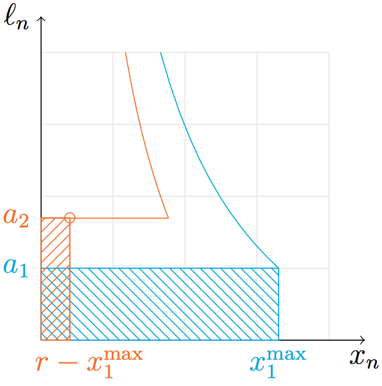
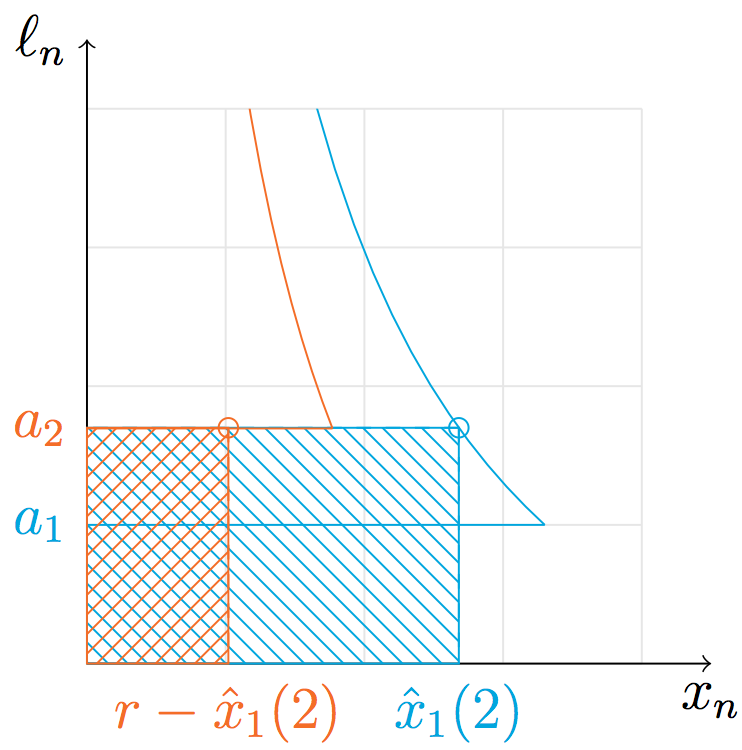

Subject to the following conditions:
Nash equilibria are any flow assignment such that there is no incentive any flow to switch links.
Why?: $\forall j < k, a_j < a_k \le \ell_k \left(x_k, 1\right)$
Why?: $\forall j > k, a_j > a_k = \ell_k \left(x_k, 0\right)$
Proof: by induction, iteratively shrink the support
BNE is the equilibrium that minimizes total cost (we can show this to be unique).
For two-link network, closed form solution is easily expressible
Questions?
/
Social Optimum
Social Optimum
BNE
